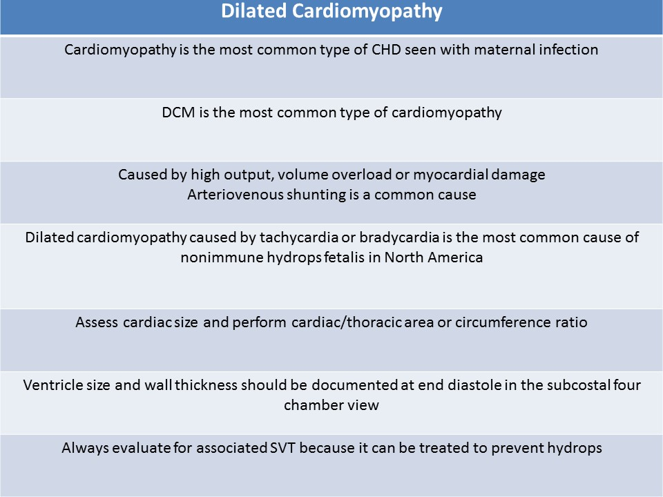
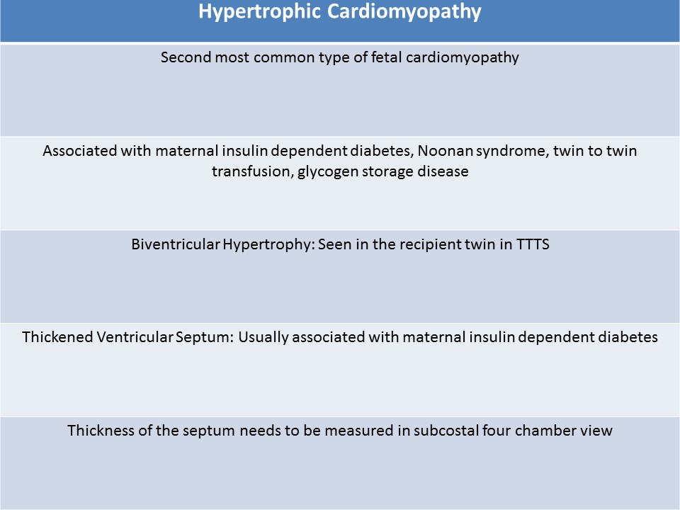
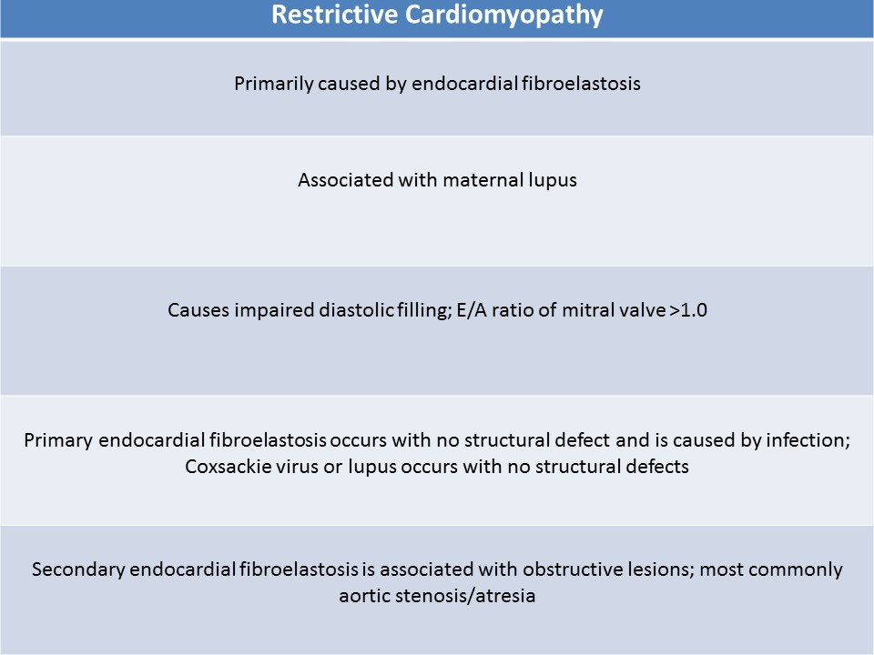

.jpg)
Cardiomyopathy
General Information:
- Disease of the heart muscle causing cardiac dysfunction
- Not usually associated with chromosomal anomalies
- Has been associated with Noonan syndrome
- Most common type of CHD seen with maternal infection
Types:
Dilated Cardiomyopathy:- Dilation of one or both ventricles with impaired function and failure
- Most common fetal cardiomyopathy
- Normal heart structure with poor function
- Arteriovenous shunting is a common cause
- Categories:
- High output failure caused by severe fetal anemia, hemophilia, alpha-thalassemia, maternal Rh incompatibility
- Peripheral oxygen demand causes heart rate and/or stroke volume to increase
- Eventually the amount of work the heart muscle is performing exceeds the myocardial oxygen supply
- Myocardial ischemia occurs causing reduced cardiac function and chamber dilatation
- Volume overload caused by significant arteriovenous shunt
- Vein of Galen aneurysm, twin to twin transfusion, acardiac twin, sacrococcygeal teratomas, AV malformation
- Increased venous return causes increased heart rate
- Eventually the amount of work the heart muscle is performing exceeds the myocardial oxygen supply
- Myocardial ischemia occurs causing reduced cardiac function and chamber dilatation
- Myocardial damage can be caused by:
- infection (TORCH, parvovirus, HIV, cytomegalovirus) - cardiomyopathy is the most common type of CHD seen with maternal infection
- maternal autoimmune disease (Sjogren disease, systemic lupus erythematous)
- supraventricular tachycardia (SVT)
- bradycardia and fetal anoxia
- High output failure caused by severe fetal anemia, hemophilia, alpha-thalassemia, maternal Rh incompatibility
- Dilated cardiomyopathy caused by tachycardia or bradycardia is the most common cause of nonimmune hydrops fetalis in North America
- Fetal SVT is treatable to prevent CHF and hydrops; early diagnosis is key
- Assess cardiac size and perform cardiac/thoracic area or circumference ratio
- Usually demonstrates elevated C/T ratios
- Normal C/T circumference ratio = 0.5
- Normal C/T area ratio = 0.33; Cardiomegaly >0.42
- Ventricle size and wall thickness should be documented at end diastole in the subcostal four chamber view
- Normal wall/septal thickness <0.5mm
- Atria should be measured at end systole
- M-mode is used to assess ventricular compliance and evaluate possible arrhythmia
- Fractional shortening should be evaluated; abnormal <25%
- End diastolic diameter - End systolic diameter / End diastolic diameter
- Right ventricle normal FS% = 25%
- Left ventricle normal FS = 30%
- Fusion of E/A of the mitral and tricuspid valve
- Absence of the atrial contraction ( a reversal flow in the ductus venosus) due to increased filling pressure
- Poor atrioventricular valve coaptation and dilatation with regurgitation
- Myocardial performance index is greater than >0.5
- Middle Cerebral Artery pulsatility index is below the umbilical artery pulsatility index due to decreased cardiac output

Dilated cardiomyopathy - 34 weeks’ gestation fetus with maternal respiratory virus infection; The heart is severely enlarged; Apical four chamber view displays severely dilated left ventricle with severely depressed function
Severely dilated (aneurysmal) left ventricle with severely depressed function; There is small pericardial effusion around the right atrium and ventricle.
Hypertrophic Cardiomyopathy:
- Second most common type of fetal cardiomyopathy
- Thickened ventricular walls with decreased compliance and diminished cardiac output
- Associated with maternal insulin dependent diabetes, Noonan’s syndrome, twin to twin transfusion and glycogen storage disease
- Biventricular Hypertrophy:
- Seen in the recipient twin in a twin to twin transfusion
- Cardiomegaly with thickened ventricular walls
- Thickened Ventricular Septum:
- Usually associated with maternal insulin dependent diabetes
- Septum is much thicker than the LV and RV free walls
- Thickened septum can lead the obstruction of left ventricular outflow tract
- Thickness of the septum needs to be measured in subcostal four chamber view
- Assess cardiac size and perform cardiac/thoracic area or circumference ratio
- Usually demonstrates elevated C/T ratios
- Normal C/T circumference ratio = 0.5
- Normal C/T area ratio = 0.33
- Ventricle size and wall thickness should be documented at end diastole in the subcostal four chamber view
- Normal wall/septal thickness <0.5mm
- Atria should be measured at end systole
- M-mode used to assess ventricular compliance and evaluate possible arrhythmia
- Fractional shortening should be evaluated
- End diastolic diameter - End systolic diameter / End diastolic diameter
- Right ventricle normal FS% = 25%
- Left ventricle normal FS = 30%

Hypertrophic cardiomyopathy: 31 weeks’ gestation fetus with maternal Noonan syndrome. Subcostal four chamber view displays moderately thickened septum
The short axis view of the left ventricle displays moderate hypertrophy of the septum
Hypertrophic cardiomyopathy
Restrictive Cardiomyopathy:
- Unusual to identify in a fetus
- Primarily caused by endocardial fibroelastosis, if identified in a fetus
- Endocardial fibroelastosis - thickening of the innermost lining of the endocardium due to an increase in the amount of supporting connective tissue and collagen fibers
- Causes impaired diastolic filling; E/A ratio of mitral valve >1.0
- Primary endocardial fibroelastosis occurs with no structural defect and is caused by infection; Coxsackie virus or lupus occurs with no structural defects
- Secondary endocardial fibroelastosis is associated with obstructive lesions; most commonly aortic stenosis/atresia
- Demonstrates ventricular enlargement and very echogenic endocardium
- Most fetuses die in utero
